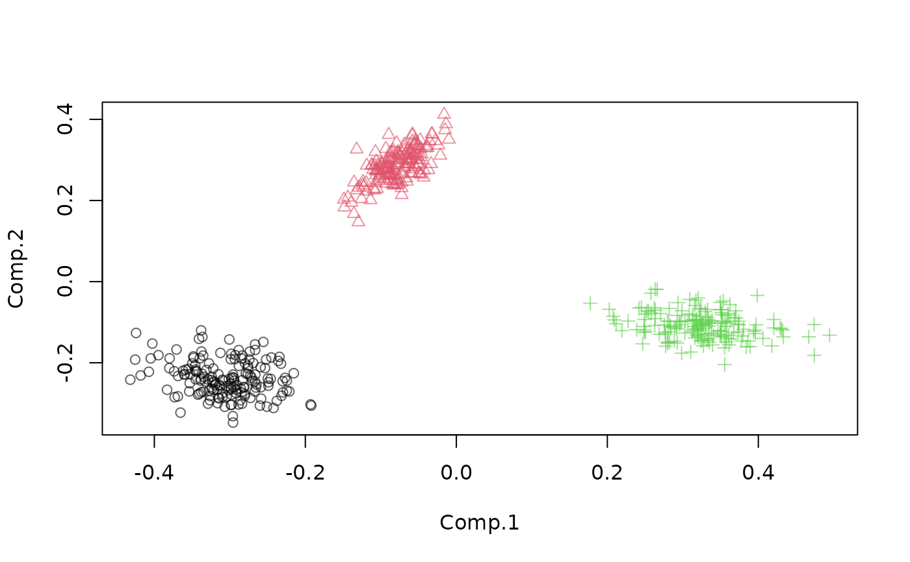
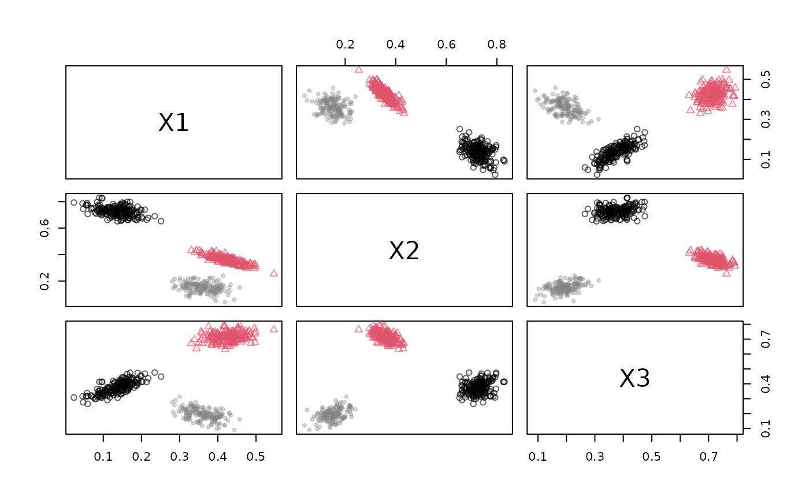

Applies an R function to transform a data stream.
Arguments
- dsd
An object of class DSD.
- func
A function that takes a data frame as its first argument and returns the transformed data frame.
- ...
Further arguments passed to
func.- info
Logical; should the function also receive and modify the information columns?
Details
The function's first argument needs to be a data.frame representing points of the
data stream. The function will be called as ps %>% your_function(), where ps is the
data.frame with some points obtained using get_points() on the data stream source.
Examples
stream <- DSD_Gaussians(k = 3, d = 3)
get_points(stream, n = 5)
#> X1 X2 X3 .class
#> 1 0.45352651 0.3377911 0.7501500 2
#> 2 0.10889782 0.7046719 0.3270846 1
#> 3 0.15342412 0.6878773 0.3662223 1
#> 4 0.46755162 0.3070608 0.7462469 2
#> 5 0.08766125 0.7228658 0.3108044 1
## Example 1: rename the columns
rename <- function(x, names) {
colnames(x) <- names
x
}
# By default, the info columns starting with . are not affected.
stream2 <- stream %>% DSF_Func(rename, names = c("A", "B", "C"))
stream2
#> Gaussian Mixture (d = 3, k = 3)
#> + function: rename
#> Class: DSF_Func, DSF, DSD_R, DSD
get_points(stream2, n = 5)
#> A B C .class
#> 1 0.4454009 0.3557983 0.7326923 2
#> 2 0.3995997 0.1391046 0.1384095 3
#> 3 0.3669829 0.1392718 0.1594778 3
#> 4 0.1460239 0.7605481 0.4059452 1
#> 5 0.3925431 0.1762777 0.1578523 3
## Example 2: add a sum columns
stream3 <- stream2 %>% DSF_Func(function(x) {
x$sum = rowSums(x)
x
})
stream3
#> Gaussian Mixture (d = 3, k = 3)
#> + function: rename
#> + function: function(x) {; x$sum = rowSums(x); x; }
#> Class: DSF_Func, DSF, DSD_R, DSD
get_points(stream3, n = 5)
#> A B C sum .class
#> 1 0.07085441 0.7726183 0.3380148 1.1814875 1
#> 2 0.39420442 0.3895611 0.6889625 1.4727280 2
#> 3 0.09919765 0.7195967 0.3200393 1.1388336 1
#> 4 0.37565418 0.3833801 0.7551145 1.5141487 2
#> 5 0.40011645 0.0700336 0.1775037 0.6476538 3
## Example 3: Project the stream on its first 2 PCs (using a sample)
pr <- princomp(get_points(stream, n = 100, info = FALSE))
pca_trans <- function(x) predict(pr, x[, c("X1", "X2", "X3")])[, 1:2 , drop = FALSE]
pca_trans(get_points(stream, n = 3, info = FALSE))
#> Comp.1 Comp.2
#> [1,] 0.36166394 -0.1007352
#> [2,] -0.09999262 0.2095389
#> [3,] 0.36230266 -0.1149193
stream4 <- stream %>% DSF_Func(pca_trans)
stream4
#> Gaussian Mixture (d = 3, k = 3)
#> + function: pca_trans
#> Class: DSF_Func, DSF, DSD_R, DSD
get_points(stream4, n = 3)
#> Comp.1 Comp.2 .class
#> 1 -0.06435726 0.3222267 2
#> 2 -0.10132438 0.3242306 2
#> 3 -0.28140166 -0.2190938 1
plot(stream4)

## Example 4: Change a class labels using info = TRUE. We redefine class 3 as noise (NA)
stream5 <- stream %>% DSF_Func(
function(x) { x[['.class']][x[['.class']] == 3] <- NA; x },
info = TRUE)
stream5
#> Gaussian Mixture (d = 3, k = 3)
#> + function: function(x) {; x[[".class"]][x[[".class"]] == 3] <- NA; x;
#> }
#> Class: DSF_Func, DSF, DSD_R, DSD
get_points(stream5, n = 5)
#> X1 X2 X3 .class
#> 1 0.4515509 0.3323482 0.7465442 2
#> 2 0.4618741 0.3200468 0.7277833 2
#> 3 0.3042363 0.2306293 0.2634666 NA
#> 4 0.3979164 0.1211677 0.1388055 NA
#> 5 0.1488373 0.7141263 0.3775558 1
plot(stream5)
